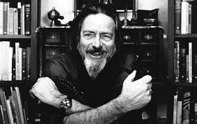
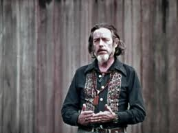

Alan Watts : Potrzeba kontorli
07.10.2020 | Mikołaj Sypuła | 22:05:07
Dzisiejszy wpis blogowy nie będzie dotyczył komputerów, tylko filozofii. Dziś przedstawię fragment wykładu Alana Wattsa w moim przekładzie. Jest wielu autorów, których twórczością warto się podzielić - wpisy takie będę (podobnie jak ten) nazywał wg schematu "Filozofia: Autor i tematyka fragmentu". Kolejność wyboru autorów filozoficznych jest przypadkowa, nie mam jednego ulubionego autora. Proszę też nie zakładać, że poglądy autorów są zgodne z moimi przkonaniami - to po prostu teksty miłe dla mentalnej gimnastyki, bo rodzące pytania natury egzystencjalnej. 
Alan Watts (1915 - 1973)
Alan Watts - brytyjski filozof, pisarz, mówca. Znany ze swych badań porównawczych religii, tłumacz i popularyzator filozofii Wschodu na Zachodzie. Napisał ponad 25 książek i licznych artykułów dotyczących tożsamości osobistej, natury rzeczywistości, wyższej świadomości, sensu życia, pojęć i obrazów Boga, niematerialnego wymiaru szczęścia. Jego książki dotyczą własnych doświadczeń w studiowaniu wschodniej i zachodniej religii i filozofii. Oddaję głos Alanowi Wattsowi.Czego Pragnę?
Alan Watts Jest niezwykle ważne, żeby rozważyć następujące pytanie: Czego tak naprawdę pragnę?. Jeśli odpowiemy na to pytanie w naiwny sposób, to najczęściej stwierdzimy, że chcielibyśmy kontrolować wszystko. Stworzyć jabłka, które nie gniją; ciała, które się nie starzeją; ubrania, które się nigdy nie znoszą; środki komunikacji przemieszczające nas z miejsca na miejsce bez konieczności oczekiwania. Moc dokonania czegokolwiek zapragniemy i to w ułamku sekundy. Ot, taka roziskrzona, technologiczna omnipotencja. Ale jeżeli zatrzymasz się i naprawdę to przemyślisz i podejdziesz do pytania z całym potencjałem swojej wyobraźni, to wkrótce zdasz sobie sprawę, że nie tego naprawdę chcesz.  Rozważmy moment, w którym mamy totalną kontrolę nad wszystkim. Kontrolę tak wielką, że przyszłość jest niemal w 100% przewidywalna. Czym ta przyszłość różniłaby się wówczas od przeszłości? Skoro wiemy o niej wszystko, to nie jest to przyszłość, bo odczuliśmy już jej smak. Nie tego chcemy. Tak naprawdę to pragniemy niespodzianki - nie wiedzieć jaka będzie przyszłość. Bo gdybyśmy wiedzieli, to nie byłaby ona świeża, nie byłaby zaskoczeniem. Zastanawiam się, co byś zrobił, gdybyś miał moc śnić w nocy jakikolwiek wybrany przez siebie sen. I oczywiście miałbyś moc wpływania na swoje odczuwanie czasu we śnie. Mógłbyś przeżyć np. 75 lat subiektywnego czasu w ramach ośmiogodzinnego snu. Przypuszczam, że zacząłbyś od spełniania wszystkich swoich zachcianek. Zaprojektowałbyś dla siebie najbardziej ekstatyczne egzystencje: romanse, bankiety, piękne kobiety, zapierające dech w piersiach podróże, ogrody, muzyka tak poruszająca, że aż nie do uwierzenia. Lecz wkrótce, po kilku miesiącach przeżywania takich 75-letnich scenariuszy, rozwinąłbyś apetyt na przeżywanie rzeczy w nieco inny sposób. Przeniósłbyś się w wymiar przygód, gdzie pojawiłyby się pewne zagrożenia i związany z nimi dreszczyk emocji pokonywania tych niebezpieczeństw. Mógłbyś ratować księżniczki przed smokami, wyruszać na niebezpieczne wyprawy, przygotowywać niesamowite eksplozje i najsprytniejsze plany ucieczki z beznadziejnych sytuacji. Mógłbyś porywalizować z przeciwnikami i poczuć słodki smak zwycięstwa. Następnie, gdy i to spowszednieje spojrzałbyś na sprawę pod zupełnie nowym kątem: a gdyby zapomnieć, że śnię? Żebym myślał, że to dzieje się naprawdę - żebym był prawdziwie zatroskany i zaangażowany. Obudzić się z takiego snu - uczucie powrotu do rzeczywistości byłoby wspaniałe. A następnie, niczym dziecko, które lubi eksplorować i odważyć się na coś nowego zapytałbyś siebie: jak daleko mogę się posunąć? Jakiego wymiaru zagubienia i odarcia z własnej mocy mogę doświadczyć i wytrzymać? Mógłbyś o to zapytać, bo przecież w końcu zawsze się obudzisz. Po dłuższym okresie dokonywania takich eksploracji, być może odnalazłbyś samego siebie, wraz z całym bagażem doświadczeń, radości i zmartwień, siedzącego przed komputerem, czytającego ten tekst. Jak możesz być pewnym, że to właśnie nie ma teraz miejsca? Gdybyś był Bogiem (w sensie wiedzy o tym co i kiedy się stanie i w pełni to wszystko kontrolował), to po prostu byś się nudził :) Porozmawiajmy o rzeczywistym pozbyciu się iluzji na temat władzy i kontroli. Być u władzy, u kontroli, słowem: pociągać za sznurki - to nie jest coś, czego logicznie i trzeźwo myślący człowiek naprawdę chce. Podyskutujmy o byciu wielkim bratem, Johnem Edgarem Hooverem czy Heinrichem Himmlerem. O byciu przyklejonym, dniem i nocą do wysoko postawionego i bronionego krzesła za biurkiem. Gabinet z telefonami i monitorami. Obserwujesz, podglądasz, szpiegujesz. Wciąż zamknięty w czterech ścianach. Oczywiście Edgar Hoover też wraca wieczorem do domu, ale nawet tam wciąż przed drzwiami czekają agenci bezpieczeństwa, obok łóżka znajduje się czerwony telefon z gorącą linią, a w głowie pojawiają się zmartwienia i obawy związane z intrygami i możliwością utraty swojej pozycji. Edgar Hoover nie może bez nadzoru pojawić się po prostu w kinie, pójść na wycieczkę do parku ze znajomą czy po prostu się zrelaksować. Cóż za straszne położenie, a wszystko dlatego, że chcemy być u władzy, chcemy zachować za wszelką cenę kontrolę.
W ludziach występuje naturalna tendencja do zastępowania porażek w miłości żądzą władzy, dominacji i kontroli. Zamiast tak robić, powinieneś spróbować wrócić na ścieżkę umiłowania. Bo nikt naprawdę nie chce władzy. Wiele osób powie, że użyłoby władzy dla dobra wspólnego, dla dokonania rzeczy wielkich. No dobrze, załóżmy że jestem dyktatorem, co chciałbyś żebym zrobił? - zapytaj ludzi, nawet polityków - nikt nie wie. Powiedzą oczywiście o pewnych krótkoterminowych planach, które jednak zweryfikowane przez życie okazują się nie być wystarczająco przemyślane. Co ciekawe, wschodnia myśl filozoficzna została przedstawiona zachodniemu światu przez ludzi zafascynowanych władzą. Od XIX wieku zachodnia cywilizacja jest pochłonięta teorią ewolucji, rozwojem technologicznym, osiąganiem coraz bardziej zaawansowanych rozwiązań cywilizacyjnych. Według Nietzschego jako ludzkość mieliśmy wyewoluować w nadczłowieka. Właśnie wtedy przedstawiono zachodniemu światu obraz wschodniej tajemniczej wiedzy filozoficznej. Przedstawiono ją przez pryzmat rozwoju ewolucyjnego, mówiło się np. o ludziach potrafiących uleczyć swoje ciało poprzez zmianę jego wibracji i przepływu energii. Dzięki kontroli nad podstawowymi procesami zachodzącymi w ciele mógłbyś wydłużyć swoje życie, przejąć władzę nad jego okolicznościami, a nawet nad momentem śmierci. Do dziś publikuje się książki i filmy pokazujące wschodnią filozofię w tym świetle. Pisze się np. o tybetańskich mnichach, a ludzie czytają to, bo kieruje nimi chęć przejęcia kontroli, znalezienia sposobu oszukania gry, w którą wszyscy gramy. Pokazuje się ludzi wschodu w propagandowym stylu mistrzów życia. Jako np. osoby które nie mają emocji, mistrzów Shaolin, którzy mogą długo wytrzymać zadawany ból, zmienić temperaturę ciała, a nawet czytać myśli czy przepowiedzieć przyszłość. Cóż, prawdziwi mistrzowie Wschodu, których spotkałem - buddyjscy mnisi, mistrzowie zen, byli całkowicie zwyczajnymi istotami ludzkimi. Miewali zły humor, bywali wybredni, słowem: zachowywali się jak ludzie. Na początku byłem zawiedziony, nie spełnili oni moich wyolbrzymionych oczekiwań bycia psychotechnologicznymi mistrzami życia czy superokultystami. Lecz po upływie dłuższego czasu, zdałem sobie sprawę, że przecież oni są o krok dalej; oni już przemyśleli co dałoby im posiadanie mocy kontrolowania wszystkiego. I zdecydowali jako mądrzy ludzie, że wcale tego nie chcą. Ścieżki uzyskiwania kontroli i władzy to mocno uwodzicielskie lecz ślepe uliczki - nigdzie Cię nie zaprowadzą. I to jest moim zdaniem najważniejsza lekcja, jaką Wschód może zaoferować Zachodowi, bo my jesteśmy tak mocno mentalnie przyczepieni do idei posiadania władzy i kontroli. My na Zachodzie definitywnie tego jeszcze nie przemyśleliśmy. Co zrobisz z absolutną kontrolą? Załóżmy, że jestem alchemikiem i mam pełną szafę eliksirów miłosnych, działających za każdym razem. Gdy dostrzegam atrakcyjną kobietę, to jedyne co muszę zrobić to zaoferować jej papierosa, czy kieliszek wina z kroplą mojej mikstury. Natychmiast, w ułamku sekundy staję się jej mistrzem. Lecz niestety, wszystko co mam w tej sytuacji to jedynie plastikowa lalka, która wykonuje wszystko co powiem, nigdy nie oponując, nawet słownie. Jednak to, czego szukamy w doświadczeniach z ludźmi (nie tylko zresztą w relacji damsko-męskiej) to kryjąca się w nich nowość, jakaś nieoczekiwana reakcja czy odpowiedź, żebyś mógł pomyśleć: "Mój Boże, to żywe stworzenie, ma własną wolę, której nie mogę kontrolować". Wolę mieć taki związek z człowiekiem niż kontrolę, bo to nigdy mi się nie znudzi. Czuję też prawdziwe przywiązanie, rześką świeżość i ożywczą niespodziankę ze spotkania z innym człowiekiem. Tak naprawdę nie chcesz władzy, nie chcesz wszystkiego kontrolować. To byłoby straszne. Nawet jeśli kiedyś wytworzymy maszynę mogącą zbudować z atomów cokolwiek sobie zażyczymy w ułamku sekundy, to po upływie pewnego czasu będziemy zmuszeni opracować dodatkowy przycisk z napisem: NIESPODZIANKA :)